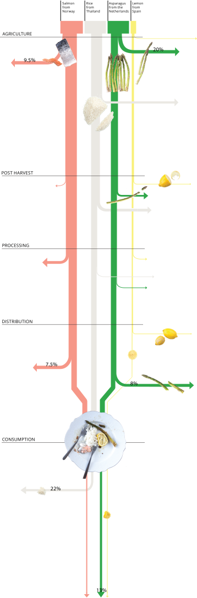

Scandinavia’s unique geography makes it a prime location to act as home to some of the world’s most delicious fish. Salmon imported from Norway is a household favourite all throughout Sweden and while it can be prepared multiple ways, most times it is eaten along side rice and asparagus with a slice of fresh lemon. In this investigation we take a closer look at the fishing industry, natural circumstances affecting fruits and vegetables and food that ends up down our own kitchen sinks.
